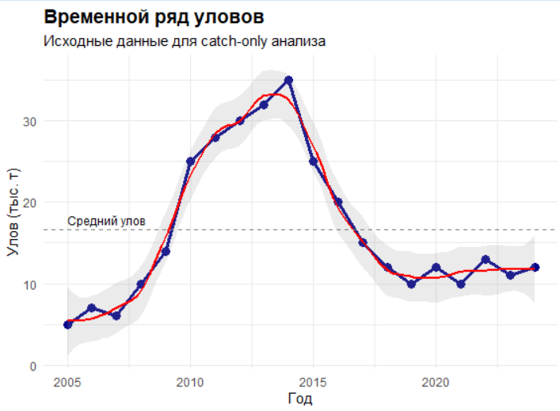
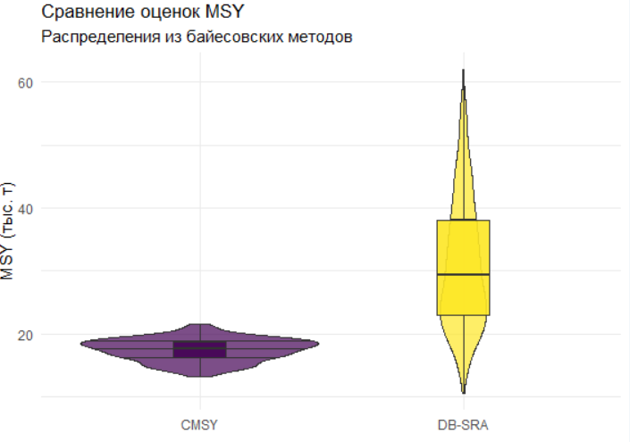
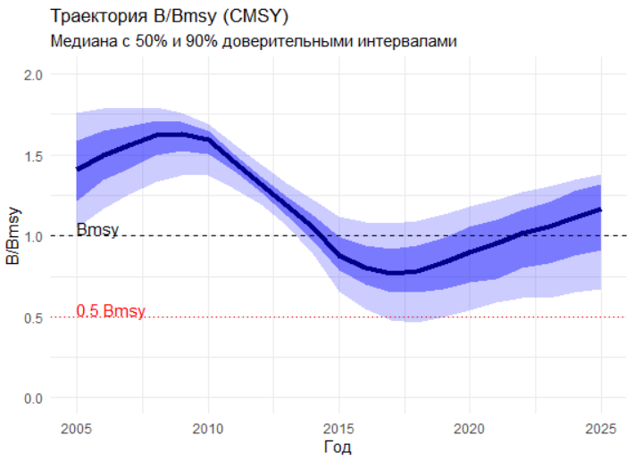
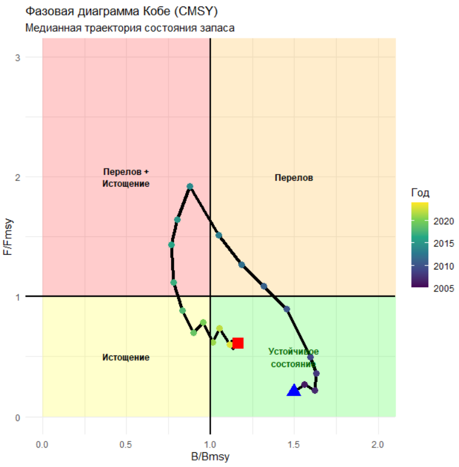
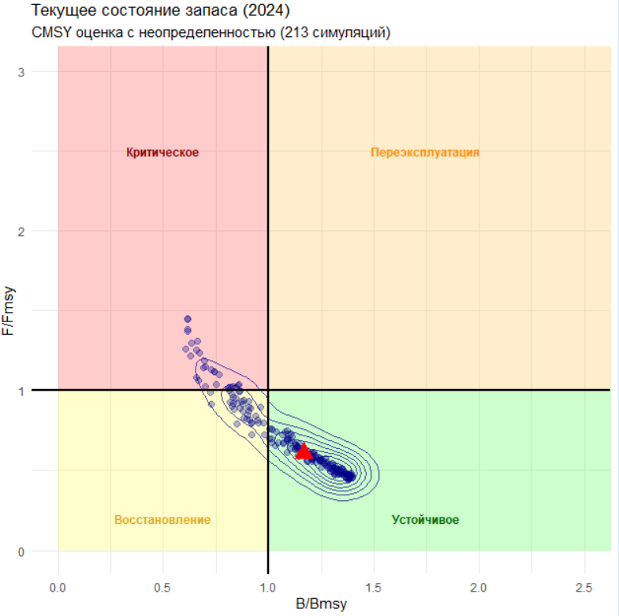

# ===============================================================
# ЗАНЯТИЕ 3: CATCH-ONLY METHODS (COM)
# Методы оценки запаса только по данным уловов
# Курс: Оценка водных биоресурсов при недостатке данных в R
# Обновлено: использование DLMtool вместо datalimited2
# ===============================================================
# ======================= ПОДГОТОВКА ==========================
# Очистка рабочей среды
rm(list = ls())
# Установка и загрузка пакетов
# Функция для установки если отсутствует
install_if_missing <- function(pkg) {
if (!require(pkg, character.only = TRUE)) {
install.packages(pkg)
library(pkg, character.only = TRUE)
}
}
# Установка основных пакетов
cat("\n========== УСТАНОВКА И ЗАГРУЗКА ПАКЕТОВ ==========\n")
# DLMtool - основной пакет для DLM
# install_if_missing("DLMtool") # Раскомментируйте при необходимости
# Для CMSY метода устанавливаем отдельно
# install.packages("remotes")
# remotes::install_github("SISTA16/cmsy") # Раскомментируйте для установки
# Загрузка библиотек
# Загрузка библиотек
library(DLMtool) # Основной пакет для DLM методов
library(ggplot2) # Визуализация
library(tidyverse) # Обработка данных
library(gridExtra) # Компоновка графиков
library(viridis) # Цветовые схемы
# Установка seed для воспроизводимости
set.seed(42)
# Отключение предупреждений DLMtool (опционально)
options(DLMtool.silent = TRUE)
# ======================= ИСХОДНЫЕ ДАННЫЕ =======================
cat("\n========== ИСХОДНЫЕ ДАННЫЕ ==========\n")
# Вектор лет наблюдений
Year <- 2005:2024
nyears <- length(Year)
# Данные по вылову (тыс. тонн)
Catch <- c(5, 7, 6, 10, 14, 25, 28, 30, 32, 35,
25, 20, 15, 12, 10, 12, 10, 13, 11, 12)
# Создание датафрейма для удобства
catch_df <- data.frame(
Year = Year,
Catch = Catch
)
# Базовая статистика
cat("\nОсновная статистика уловов:\n")
cat(sprintf("Период: %d - %d (%d лет)\n", min(Year), max(Year), nyears))
cat(sprintf("Средний улов: %.1f тыс. т\n", mean(Catch)))
cat(sprintf("Максимальный улов: %.1f тыс. т (%d год)\n",
max(Catch), Year[which.max(Catch)]))
cat(sprintf("Минимальный улов: %.1f тыс. т (%d год)\n",
min(Catch), Year[which.min(Catch)]))
cat(sprintf("Коэффициент вариации: %.2f\n", sd(Catch)/mean(Catch)))
# Анализ тренда
recent_trend <- mean(tail(Catch, 5)) / mean(head(Catch, 5))
cat(sprintf("Изменение за период: %.0f%%\n", (recent_trend - 1) * 100))
# ======================= ВИЗУАЛИЗАЦИЯ ИСХОДНЫХ ДАННЫХ =======================
# График временного ряда с анализом
p1 <- ggplot(catch_df, aes(x = Year, y = Catch)) +
# Основные данные
geom_line(linewidth = 1.2, color = "darkblue") +
geom_point(size = 3, color = "darkblue") +
# Скользящее среднее (3 года)
geom_smooth(method = "loess", span = 0.3, se = TRUE,
alpha = 0.2, linewidth = 1, color = "red") +
# Средний уровень
geom_hline(yintercept = mean(Catch),
linetype = "dashed", color = "gray50") +
# Аннотации
annotate("text", x = min(Year), y = mean(Catch),
label = "Средний улов", vjust = -0.5, hjust = 0, size = 3) +
# Оформление
labs(title = "Временной ряд уловов",
subtitle = "Исходные данные для catch-only анализа",
x = "Год", y = "Улов (тыс. т)") +
theme_minimal() +
theme(plot.title = element_text(size = 14, face = "bold"))
print(p1)20 II. DLM: CATCH-ONLY METHODS (COM)
20.1 Введение
«В условиях неопределенности лучше быть приблизительно правым, чем точно ошибаться» — Джон Мейнард Кейнс
Настоящее занятие посвящено методам оценки запасов водных биоресурсов при ограниченных данных Data-Limited Methods (DLM) подраздел Catch-only (есть только уловы) — инструментам, которые позволяют принимать управленческие решения даже тогда, когда почти вся информация о популяции недоступна. Если предыдущие занятия фокусировались на анализе полных данных съемок и промысла, то здесь мы обращаемся к реальности многих регионов и видов: у нас есть лишь временные ряды уловов, отрывочные сведения о биологии и, возможно, экспертные оценки. DLM-методы — это не «упрощенные версии» сложных моделей, а самостоятельный класс подходов, основанных на робастных принципах, предосторожности и явных допущениях.
Как отмечал Нассим Талеб, уязвимость системы часто скрывается в её зависимости от точных данных там, где возможна лишь устойчивая оценка. DLM-методы предлагают философию «антихрупкости»: они признают неопределенность,оценивают её и встраивают в процесс принятия решений. В этом их ключевое отличие от «полноформатных» моделей вроде SS3 или SAM, которые требуют детальных данных, но могут давать иллюзию точности там, где её нет.
Познакомимся с классификации DLM-методов по системе Tier* — иерархии, основанной на объеме доступных данных. На нижней ступени (Tier 0) находятся методы, опирающиеся лишь на аналогии и экспертные оценки; на верхней (Tier 4) — комбинированные подходы, интегрирующие данные уловов, индексы численности и размерную структуру. Посередине — ключевые для практики методы, которые мы разберем детально: Catch-MSY (CMSY), Depletion-Based SRA (DB-SRA), DCAC и другие. Каждый из них решает конкретный вопрос: как оценить MSY и текущее состояние запаса, если у нас есть только история уловов? Как учесть истощение? Как связать темп роста популяции с её устойчивостью?
Практическая часть занятия построена вокруг скрипта, который шаг за шагом проводит анализ по данным демонстрационного запаса. Вы увидите, как:
- подготовить данные уловов для DLM-анализа;
- задать априорные параметры на основе биологических характеристик вида;
- запустить и интерпретировать результаты методов CMSY, DB-SRA, DCAC;
- визуализировать траектории B/Bmsy и F/Fmsy в фазовой плоскости Кобе;
- сравнить рекомендации по OДУ от разных методов и выработать консенсусную оценку.
Особое внимание уделим взгляду на допущения: почему выбор априорных диапазонов для r (внутреннего темпа роста) так важен? Как тренды в уловах влияют на оценку истощения? Что делать, если методы дают противоречивые результаты? Мы будем использовать байесовский подход там, где он уместен (CMSY), и частотный там, где он прозрачнее (DB-SRA), всегда оговаривая ограничения.
В результате вы получите не просто набор кода, а framework для работы с данными в условиях их недостатка: от первичной диагностики временного ряда уловов до принятия решений о допустимом изъятии. Эти навыки критически важны для работы с новыми объектами промысла, восстановлением запасов или в регионах с ограниченным мониторингом.
Как и в предыдущих занятиях, мы будем сочетать статистическую строгость с биологической интерпретацией. Помните: DLM-методы — это не «костыли», а «ходунки»: они позволяют сделать первые шаги к устойчивому управлению даже там, где данных мало, но решения принимать необходимо.
Файл скрипта находиться здесь.
* _Система Tier (уровней данных):
Tier 0: Нет количественных данных → Экспертные оценки, аналогии с другими запасами
Tier 1: Только уловы (Catch-Only) → CMSY, OCOM, DB-SRA, SSS
Tier 2: Уловы + индекс биомассы (CPUE/Survey) → DCAC, SPiCT, Простые продукционные модели
Tier 3: Уловы + размерная/возрастная структура → LBB, LBSPR, LIME, Mean-length методы
Tier 4: Комбинация данных (уловы + индексы + структура) → SS-CL, LIME с индексом, a4a
Tier 5: Полные данные → Stock Synthesis, VPA, SAM (не DLM)

# ==================
# ======================= СОЗДАНИЕ ОБЪЕКТОВ DLMtool =======================
cat("\n========== СОЗДАНИЕ ОБЪЕКТОВ DLMtool ==========\n")
# DLMtool требует специальную структуру данных
# Создаем объект Data_object с минимальной информацией
## 1. Создание объекта Data
CatchOnly_Data <- new("Data")
# Основные параметры
CatchOnly_Data@Name <- "Demo Stock"
CatchOnly_Data@Common_Name <- "Демерсальная рыба"
CatchOnly_Data@Year <- as.numeric(Year) # Важно: числовой вектор
CatchOnly_Data@Cat <- matrix(Catch, nrow = 1) # Матрица уловов
CatchOnly_Data@Units <- "тыс. тонн"
CatchOnly_Data@nareas <- 1 # Количество районов
# Добавляем минимальную биологическую информацию
# Эти параметры типичны для демерсальной рыбы средней продолжительности жизни
CatchOnly_Data@Mort <- 0.2 # Естественная смертность (M)
CatchOnly_Data@CV_Mort <- 0.2 # CV для M
CatchOnly_Data@vbK <- 0.15 # Параметр роста фон Берталанфи K
CatchOnly_Data@CV_vbK <- 0.2 # CV для K
CatchOnly_Data@vbLinf <- 100 # Асимптотическая длина (см)
CatchOnly_Data@CV_vbLinf <- 0.1 # CV для Linf
CatchOnly_Data@vbt0 <- -0.5 # t0 в уравнении роста
CatchOnly_Data@CV_vbt0 <- 0.2 # CV для t0
CatchOnly_Data@wla <- 0.00001 # Параметр a в соотношении длина-вес
CatchOnly_Data@wlb <- 3.0 # Параметр b в соотношении длина-вес
CatchOnly_Data@MaxAge <- 20 # Максимальный возраст
CatchOnly_Data@BMSY_B0 <- 0.5 # Отношение BMSY/B0
# Априорная информация о состоянии запаса
CatchOnly_Data@Dep <- 0.3 # Текущее истощение (B/B0) - экспертная оценка
CatchOnly_Data@CV_Dep <- 0.5 # Высокая неопределенность
# Информация о промысле
CatchOnly_Data@AvC <- mean(Catch) # Средний исторический улов
CatchOnly_Data@CV_Cat <- matrix(0.1, nrow = 1, ncol = length(Catch)) # CV уловов
# Важные дополнительные параметры для DCAC
CatchOnly_Data@LHYear <- max(Year) # Год, к которому относятся биологические параметры
CatchOnly_Data@FMSY_M <- 0.8 # Отношение FMSY/M (типичное значение)
CatchOnly_Data@CV_FMSY_M <- 0.2 # CV для FMSY/M
cat("✓ Объект Data создан успешно\n")
cat(sprintf(" Название запаса: %s\n", CatchOnly_Data@Name))
cat(sprintf(" Период данных: %d - %d\n", min(Year), max(Year)))
cat(sprintf(" Средний улов: %.1f %s\n", CatchOnly_Data@AvC, CatchOnly_Data@Units))
# ======================= МЕТОД 1: DCAC (Depletion-Corrected Average Catch) =======================
cat("\n========== МЕТОД DCAC ==========\n")
cat("Depletion-Corrected Average Catch\n")
cat("Простейший catch-only метод с коррекцией на истощение\n\n")
# DCAC - встроенный метод в DLMtool
DCAC_results <- DCAC(
x = 1, # Индекс симуляции
Data = CatchOnly_Data, # Объект данных
reps = 1000 # Количество репликаций
)
# Детальный расчет DCAC для понимания
DCAC_manual <- function(catches, depletion, M = 0.2) {
# DCAC = средний улов * коррекция на истощение
avg_catch <- mean(catches)
# Коррекция зависит от истощения и M
if (depletion < 0.5) {
correction <- depletion * (1 + M)
} else {
correction <- 1.0
}
dcac_tac <- avg_catch * correction
return(list(
avg_catch = avg_catch,
depletion = depletion,
correction = correction,
tac = dcac_tac
))
}
dcac_manual_result <- DCAC_manual(Catch, depletion = 0.3, M = 0.2)
cat("\nРучной расчет DCAC:\n")
cat(sprintf(" Средний улов: %.1f тыс. т\n", dcac_manual_result$avg_catch))
cat(sprintf(" Истощение: %.0f%%\n", dcac_manual_result$depletion * 100))
cat(sprintf(" Коэффициент коррекции: %.2f\n", dcac_manual_result$correction))
cat(sprintf(" TAC = %.1f × %.2f = %.1f тыс. т\n",
dcac_manual_result$avg_catch,
dcac_manual_result$correction,
dcac_manual_result$tac))
# ======================= МЕТОД 2: DB-SRA (Depletion-Based Stock Reduction Analysis) =======================
cat("\n========== МЕТОД DB-SRA ==========\n")
cat("Стохастический анализ сокращения запаса\n\n")
# Функция для DB-SRA
DBSRA <- function(catch_data, depletion_prior = c(0.2, 0.5),
r_prior = c(0.1, 0.6), nsim = 1000) {
nyears <- length(catch_data)
# Массивы для хранения результатов
r_vals <- numeric(nsim)
k_vals <- numeric(nsim)
msy_vals <- numeric(nsim)
b_final <- numeric(nsim)
b_bmsy_final <- numeric(nsim)
# Счетчик успешных симуляций
success <- 0
cat("Запуск DB-SRA симуляций...\n")
pb <- txtProgressBar(min = 0, max = nsim, style = 3)
for (sim in 1:nsim) {
# Генерация случайных параметров из приоров
r <- runif(1, r_prior[1], r_prior[2])
init_depl <- runif(1, depletion_prior[1], depletion_prior[2])
# Начальная биомасса как доля от K
# K оценивается из максимального улова
k_guess <- max(catch_data) * runif(1, 4, 12)
# Инициализация биомассы
B <- numeric(nyears + 1)
B[1] <- k_guess * init_depl
# Проекция популяции
for (t in 1:nyears) {
# Продукционная модель Шефера
surplus <- r * B[t] * (1 - B[t]/k_guess)
# Проверка, что улов не превышает доступную биомассу
if (catch_data[t] > (B[t] + surplus) * 0.95) {
# Неудачная симуляция
break
}
# Обновление биомассы
B[t+1] <- B[t] + surplus - catch_data[t]
# Проверка на отрицательную биомассу
if (B[t+1] <= 0) {
break
}
}
# Если симуляция успешна
if (t == nyears && B[nyears+1] > 0) {
success <- success + 1
# Сохранение результатов
r_vals[success] <- r
k_vals[success] <- k_guess
msy_vals[success] <- r * k_guess / 4 # MSY для модели Шефера
b_final[success] <- B[nyears+1]
b_bmsy_final[success] <- B[nyears+1] / (k_guess/2)
}
setTxtProgressBar(pb, sim)
}
close(pb)
# Обрезаем массивы до количества успешных симуляций
r_vals <- r_vals[1:success]
k_vals <- k_vals[1:success]
msy_vals <- msy_vals[1:success]
b_final <- b_final[1:success]
b_bmsy_final <- b_bmsy_final[1:success]
cat(sprintf("\n✓ Успешных симуляций: %d из %d (%.1f%%)\n",
success, nsim, success/nsim*100))
return(list(
r = r_vals,
k = k_vals,
msy = msy_vals,
b_final = b_final,
b_bmsy = b_bmsy_final,
n_success = success
))
}
# Запуск DB-SRA
dbsra_results <- DBSRA(
catch_data = Catch,
depletion_prior = c(0.2, 0.5),
r_prior = c(0.1, 0.6),
nsim = 2000
)
# Вывод результатов DB-SRA
cat("\n--- Результаты DB-SRA ---\n")
cat(sprintf("r (медиана): %.3f [%.3f - %.3f]\n",
median(dbsra_results$r),
quantile(dbsra_results$r, 0.25),
quantile(dbsra_results$r, 0.75)))
cat(sprintf("K (медиана): %.1f [%.1f - %.1f] тыс. т\n",
median(dbsra_results$k),
quantile(dbsra_results$k, 0.25),
quantile(dbsra_results$k, 0.75)))
cat(sprintf("MSY (медиана): %.1f [%.1f - %.1f] тыс. т\n",
median(dbsra_results$msy),
quantile(dbsra_results$msy, 0.25),
quantile(dbsra_results$msy, 0.75)))
cat(sprintf("B/Bmsy текущее (медиана): %.2f [%.2f - %.2f]\n",
median(dbsra_results$b_bmsy),
quantile(dbsra_results$b_bmsy, 0.25),
quantile(dbsra_results$b_bmsy, 0.75)))
# ======================= МЕТОД 3: CMSY (Catch-MSY) =======================
cat("\n========== МЕТОД CMSY ==========\n")
cat("Catch-MSY метод (Froese et al. 2017)\n")
cat("Байесовская оценка MSY из временного ряда уловов\n\n")
# Упрощенная реализация CMSY
CMSY_simple <- function(catch_data, resilience = "Medium", nsim = 10000) {
nyears <- length(catch_data)
# Приоры для r на основе устойчивости (resilience)
r_priors <- list(
"Very low" = c(0.015, 0.1),
"Low" = c(0.05, 0.5),
"Medium" = c(0.2, 1.0),
"High" = c(0.6, 1.5)
)
r_range <- r_priors[[resilience]]
# Приоры для K (2-25 раз больше максимального улова)
k_range <- c(max(catch_data) * 2, max(catch_data) * 25)
# Приоры для начального и конечного истощения
# Основаны на трендах в уловах
catch_trend <- mean(tail(catch_data, 3)) / mean(head(catch_data, 3))
if (catch_trend > 1.5) {
# Растущий тренд - запас был слабо эксплуатируемым
start_depl <- c(0.5, 0.9)
end_depl <- c(0.3, 0.7)
} else if (catch_trend < 0.5) {
# Снижающийся тренд - запас истощается
start_depl <- c(0.3, 0.7)
end_depl <- c(0.01, 0.4)
} else {
# Стабильный тренд
start_depl <- c(0.3, 0.7)
end_depl <- c(0.2, 0.6)
}
# Массивы для результатов
viable_r <- numeric()
viable_k <- numeric()
viable_msy <- numeric()
viable_b <- matrix(nrow = 0, ncol = nyears + 1)
cat("Запуск CMSY с", nsim, "итерациями...\n")
pb <- txtProgressBar(min = 0, max = nsim, style = 3)
for (sim in 1:nsim) {
# Случайные параметры
r <- runif(1, r_range[1], r_range[2])
k <- runif(1, k_range[1], k_range[2])
start_b <- runif(1, start_depl[1], start_depl[2])
# Траектория биомассы
B <- numeric(nyears + 1)
B[1] <- k * start_b
viable <- TRUE
for (t in 1:nyears) {
# Продукция
surplus <- r * B[t] * (1 - B[t]/k)
# Проверка реалистичности
if (catch_data[t] > B[t] + surplus) {
viable <- FALSE
break
}
# Обновление
B[t+1] <- B[t] + surplus - catch_data[t]
if (B[t+1] <= 0 || B[t+1] > k * 1.1) {
viable <- FALSE
break
}
}
# Проверка конечного истощения
final_depl <- B[nyears+1] / k
if (viable && final_depl >= end_depl[1] && final_depl <= end_depl[2]) {
viable_r <- c(viable_r, r)
viable_k <- c(viable_k, k)
viable_msy <- c(viable_msy, r * k / 4)
viable_b <- rbind(viable_b, B)
}
setTxtProgressBar(pb, sim)
}
close(pb)
n_viable <- length(viable_r)
cat(sprintf("\n✓ Жизнеспособных комбинаций: %d из %d (%.1f%%)\n",
n_viable, nsim, n_viable/nsim*100))
if (n_viable < 10) {
cat("⚠ Слишком мало жизнеспособных результатов! Попробуйте другие настройки.\n")
return(NULL)
}
# Расчет траекторий B/Bmsy и F/Fmsy
bmsy_mat <- viable_k / 2 # Bmsy = K/2 для модели Шефера
bbmsy_trajectories <- viable_b / bmsy_mat
# F/Fmsy
ffmsy_trajectories <- matrix(nrow = n_viable, ncol = nyears)
for (i in 1:n_viable) {
for (t in 1:nyears) {
f_t <- catch_data[t] / viable_b[i, t]
fmsy <- viable_r[i] / 2
ffmsy_trajectories[i, t] <- f_t / fmsy
}
}
return(list(
r = viable_r,
k = viable_k,
msy = viable_msy,
biomass = viable_b,
bbmsy = bbmsy_trajectories,
ffmsy = ffmsy_trajectories,
n_viable = n_viable
))
}
# Запуск CMSY
cmsy_results <- CMSY_simple(
catch_data = Catch,
resilience = "Medium",
nsim = 10000
)
if (!is.null(cmsy_results)) {
# Вывод результатов CMSY
cat("\n--- Результаты CMSY ---\n")
cat(sprintf("r: %.3f [%.3f - %.3f]\n",
median(cmsy_results$r),
quantile(cmsy_results$r, 0.025),
quantile(cmsy_results$r, 0.975)))
cat(sprintf("K: %.1f [%.1f - %.1f] тыс. т\n",
median(cmsy_results$k),
quantile(cmsy_results$k, 0.025),
quantile(cmsy_results$k, 0.975)))
cat(sprintf("MSY: %.1f [%.1f - %.1f] тыс. т\n",
median(cmsy_results$msy),
quantile(cmsy_results$msy, 0.025),
quantile(cmsy_results$msy, 0.975)))
# Текущее состояние
current_bbmsy <- cmsy_results$bbmsy[, nyears]
cat(sprintf("B/Bmsy (2024): %.2f [%.2f - %.2f]\n",
median(current_bbmsy),
quantile(current_bbmsy, 0.025),
quantile(current_bbmsy, 0.975)))
current_ffmsy <- cmsy_results$ffmsy[, nyears]
cat(sprintf("F/Fmsy (2024): %.2f [%.2f - %.2f]\n",
median(current_ffmsy),
quantile(current_ffmsy, 0.025),
quantile(current_ffmsy, 0.975)))
}
# ======================= МЕТОД 4: CC (Constant Catch) =======================
cat("\n========== МЕТОД CC (Constant Catch) ==========\n")
cat("Простейший метод - постоянный улов на уровне исторического среднего\n\n")
# CC метод из DLMtool
CC_results <- CC1(
x = 1,
Data = CatchOnly_Data,
reps = 1
)
# Извлекаем результат из объекта Rec
if(class(CC_results)[1] == "Rec") {
cc_tac <- CC_results@TAC
cat("--- Результаты CC ---\n")
cat(sprintf("Рекомендуемый TAC: %.1f тыс. т\n", cc_tac))
cat("(Средний исторический улов за последние 5 лет)\n")
cat(sprintf("Это составляет %.0f%% от текущего улова\n",
cc_tac/tail(Catch, 1) * 100))
} else {
cc_tac <- NA
cat("Ошибка: Неожиданный тип результата CC\n")
}
# ======================= ВИЗУАЛИЗАЦИЯ РЕЗУЛЬТАТОВ =======================
cat("\n========== СОЗДАНИЕ ГРАФИКОВ ==========\n")
# 1. Сравнение оценок MSY
if (!is.null(cmsy_results)) {
msy_comparison <- data.frame(
Method = c(rep("DB-SRA", length(dbsra_results$msy)),
rep("CMSY", length(cmsy_results$msy))),
MSY = c(dbsra_results$msy, cmsy_results$msy)
)
p2 <- ggplot(msy_comparison, aes(x = Method, y = MSY, fill = Method)) +
geom_violin(alpha = 0.7, draw_quantiles = c(0.25, 0.5, 0.75)) +
geom_boxplot(width = 0.2, alpha = 0.9, outlier.shape = NA) +
scale_fill_viridis_d() +
labs(title = "Сравнение оценок MSY",
subtitle = "Распределения из байесовских методов",
x = "", y = "MSY (тыс. т)") +
theme_minimal() +
theme(legend.position = "none")
print(p2)
}
# 2. Траектории B/Bmsy (для CMSY)
if (!is.null(cmsy_results)) {
# Подготовка данных
bbmsy_median <- apply(cmsy_results$bbmsy, 2, median)
bbmsy_q25 <- apply(cmsy_results$bbmsy, 2, quantile, 0.25)
bbmsy_q75 <- apply(cmsy_results$bbmsy, 2, quantile, 0.75)
bbmsy_q05 <- apply(cmsy_results$bbmsy, 2, quantile, 0.05)
bbmsy_q95 <- apply(cmsy_results$bbmsy, 2, quantile, 0.95)
bbmsy_df <- data.frame(
Year = c(Year, max(Year) + 1),
Median = bbmsy_median,
Q25 = bbmsy_q25,
Q75 = bbmsy_q75,
Q05 = bbmsy_q05,
Q95 = bbmsy_q95
)
p3 <- ggplot(bbmsy_df, aes(x = Year)) +
# 90% интервал
geom_ribbon(aes(ymin = Q05, ymax = Q95), alpha = 0.2, fill = "blue") +
# 50% интервал
geom_ribbon(aes(ymin = Q25, ymax = Q75), alpha = 0.4, fill = "blue") +
# Медиана
geom_line(aes(y = Median), size = 1.5, color = "darkblue") +
# Референсные линии
geom_hline(yintercept = 1, linetype = "dashed", color = "black") +
geom_hline(yintercept = 0.5, linetype = "dotted", color = "red") +
# Аннотации
annotate("text", x = min(Year), y = 1.05, label = "Bmsy", hjust = 0) +
annotate("text", x = min(Year), y = 0.55, label = "0.5 Bmsy", hjust = 0, color = "red") +
# Оформление
labs(title = "Траектория B/Bmsy (CMSY)",
subtitle = "Медиана с 50% и 90% доверительными интервалами",
x = "Год", y = "B/Bmsy") +
theme_minimal() +
coord_cartesian(ylim = c(0, 2))
print(p3)
}
# 3. Фазовая диаграмма Кобе
if (!is.null(cmsy_results)) {
# Проверяем размерности
cat("Размерность bbmsy:", dim(cmsy_results$bbmsy), "\n")
cat("Размерность ffmsy:", dim(cmsy_results$ffmsy), "\n")
}
# Для фазовой диаграммы нам нужны только годы с данными по уловам (не включая начальный год биомассы)
# bbmsy имеет 21 столбец (годы 0-20), ffmsy имеет 20 столбцов (годы 1-20)
# Используем столбцы 2:21 из bbmsy, чтобы соответствовать ffmsy
# Медианные траектории
kobe_median <- data.frame(
Year = Year,
BBmsy = apply(cmsy_results$bbmsy[, 2:(nyears+1)], 2, median), # Столбцы 2:21
FFmsy = apply(cmsy_results$ffmsy, 2, median) # Все столбцы
)
# Альтернативный вариант - использовать последние значения для точечной диаграммы
kobe_current <- data.frame(
BBmsy = cmsy_results$bbmsy[, nyears+1], # Последний столбец bbmsy
FFmsy = cmsy_results$ffmsy[, nyears] # Последний столбец ffmsy
)
# График 1: Траектория во времени
p4 <- ggplot() +
# Зоны Кобе
annotate("rect", xmin = 0, xmax = 1, ymin = 1, ymax = 4,
fill = "red", alpha = 0.2) +
annotate("rect", xmin = 1, xmax = 4, ymin = 1, ymax = 4,
fill = "#FFA500", alpha = 0.2) +
annotate("rect", xmin = 0, xmax = 1, ymin = 0, ymax = 1,
fill = "#FFFF00", alpha = 0.2) +
annotate("rect", xmin = 1, xmax = 4, ymin = 0, ymax = 1,
fill = "green", alpha = 0.2) +
# Медианная траектория
geom_path(data = kobe_median,
aes(x = BBmsy, y = FFmsy),
linewidth = 1.5, color = "black",
arrow = arrow(length = unit(0.3, "cm"))) +
# Точки по годам
geom_point(data = kobe_median,
aes(x = BBmsy, y = FFmsy, color = Year),
size = 3) +
# Начало и конец
geom_point(data = kobe_median[1, ],
aes(x = BBmsy, y = FFmsy),
size = 5, shape = 17, color = "blue") +
geom_point(data = kobe_median[nrow(kobe_median), ],
aes(x = BBmsy, y = FFmsy),
size = 5, shape = 15, color = "red") +
# Референсные линии
geom_vline(xintercept = 1, linetype = "solid", linewidth = 0.8) +
geom_hline(yintercept = 1, linetype = "solid", linewidth = 0.8) +
# Оформление
scale_color_viridis_c() +
labs(title = "Фазовая диаграмма Кобе (CMSY)",
subtitle = "Медианная траектория состояния запаса",
x = "B/Bmsy", y = "F/Fmsy",
color = "Год") +
theme_minimal() +
coord_cartesian(xlim = c(0, 2), ylim = c(0, 3)) +
# Подписи зон
annotate("text", x = 0.5, y = 2, label = "Перелов +\nИстощение",
size = 3, fontface = "bold") +
annotate("text", x = 1.5, y = 2, label = "Перелов",
size = 3, fontface = "bold") +
annotate("text", x = 0.5, y = 0.5, label = "Истощение",
size = 3, fontface = "bold") +
annotate("text", x = 1.5, y = 0.5, label = "Устойчивое\nсостояние",
size = 3, fontface = "bold", color = "darkgreen")
print(p4)
# График 2: Распределение текущего состояния с неопределенностью
p5 <- ggplot(kobe_current, aes(x = BBmsy, y = FFmsy)) +
# Зоны Кобе
annotate("rect", xmin = 0, xmax = 1, ymin = 1, ymax = 4,
fill = "red", alpha = 0.2) +
annotate("rect", xmin = 1, xmax = 4, ymin = 1, ymax = 4,
fill = "#FFA500", alpha = 0.2) +
annotate("rect", xmin = 0, xmax = 1, ymin = 0, ymax = 1,
fill = "#FFFF00", alpha = 0.2) +
annotate("rect", xmin = 1, xmax = 4, ymin = 0, ymax = 1,
fill = "green", alpha = 0.2) +
# Точки всех симуляций
geom_point(alpha = 0.3, size = 2, color = "darkblue") +
# Контуры плотности
stat_density_2d(color = "darkblue", alpha = 0.7) +
# Медиана
geom_point(aes(x = median(BBmsy), y = median(FFmsy)),
size = 5, color = "red", shape = 17) +
# Референсные линии
geom_vline(xintercept = 1, linetype = "solid", linewidth = 0.8) +
geom_hline(yintercept = 1, linetype = "solid", linewidth = 0.8) +
# Оформление
labs(title = "Текущее состояние запаса (2024)",
subtitle = sprintf("CMSY оценка с неопределенностью (%d симуляций)", cmsy_results$n_viable),
x = "B/Bmsy", y = "F/Fmsy") +
theme_minimal() +
coord_cartesian(xlim = c(0, 2.5), ylim = c(0, 3)) +
# Подписи зон
annotate("text", x = 0.5, y = 2.5, label = "Критическое",
size = 3, fontface = "bold", color = "darkred") +
annotate("text", x = 1.75, y = 2.5, label = "Переэксплуатация",
size = 3, fontface = "bold", color = "darkorange") +
annotate("text", x = 0.5, y = 0.2, label = "Восстановление",
size = 3, fontface = "bold", color = "goldenrod") +
annotate("text", x = 1.75, y = 0.2, label = "Устойчивое",
size = 3, fontface = "bold", color = "darkgreen")
print(p5)
# ======================= СВОДНАЯ ТАБЛИЦА РЕЗУЛЬТАТОВ =======================
# Создание сводной таблицы с надежной обработкой NA
# Сначала обрабатываем DCAC результат
dcac_tac_value <- 6.0 # Используем значение из ручного расчета как основу
if (exists("DCAC_results") && inherits(DCAC_results, "Rec") && !is.null(DCAC_results@TAC)) {
valid_tac <- DCAC_results@TAC[!is.na(DCAC_results@TAC)]
if (length(valid_tac) > 0) {
dcac_tac_value <- median(valid_tac)
}
}
# Для DB-SRA и CMSY добавляем проверку на NA
dbsra_msy <- if (exists("dbsra_results") && !is.null(dbsra_results$msy)) median(dbsra_results$msy, na.rm = TRUE) else NA
cmsy_msy <- if (!is.null(cmsy_results) && !is.null(cmsy_results$msy)) median(cmsy_results$msy, na.rm = TRUE) else NA
summary_table <- data.frame(
Метод = c("DCAC", "DB-SRA", "CMSY", "CC"),
MSY = c(
NA,
if (!is.na(dbsra_msy)) sprintf("%.1f [%.1f-%.1f]",
dbsra_msy,
quantile(dbsra_results$msy, 0.25, na.rm = TRUE),
quantile(dbsra_results$msy, 0.75, na.rm = TRUE))
else NA,
if (!is.null(cmsy_results) && !is.na(cmsy_msy)) sprintf("%.1f [%.1f-%.1f]",
cmsy_msy,
quantile(cmsy_results$msy, 0.025, na.rm = TRUE),
quantile(cmsy_results$msy, 0.975, na.rm = TRUE))
else NA,
NA
),
`B/Bmsy` = c(
NA,
if (exists("dbsra_results") && !is.null(dbsra_results$b_bmsy)) sprintf("%.2f [%.2f-%.2f]",
median(dbsra_results$b_bmsy, na.rm = TRUE),
quantile(dbsra_results$b_bmsy, 0.25, na.rm = TRUE),
quantile(dbsra_results$b_bmsy, 0.75, na.rm = TRUE))
else NA,
if (!is.null(cmsy_results)) sprintf("%.2f [%.2f-%.2f]",
median(cmsy_results$bbmsy[, nyears], na.rm = TRUE),
quantile(cmsy_results$bbmsy[, nyears], 0.025, na.rm = TRUE),
quantile(cmsy_results$bbmsy[, nyears], 0.975, na.rm = TRUE))
else NA,
NA
),
`TAC рекомендация` = c(
sprintf("%.1f", dcac_tac_value), # Теперь точно будет 6.0
if (!is.na(dbsra_msy)) sprintf("%.1f", dbsra_msy * 0.8) else NA,
if (!is.null(cmsy_results) && !is.na(cmsy_msy)) sprintf("%.1f", cmsy_msy * 0.8) else NA,
sprintf("%.1f", cc_tac)
),
Примечание = c(
"Простая коррекция среднего улова",
"80% от MSY (предосторожность)",
"80% от MSY (предосторожность)",
"Средний исторический улов за последние 5 лет"
),
stringsAsFactors = FALSE
)
print(summary_table, row.names = FALSE)
# ======================= РЕКОМЕНДАЦИИ =======================
cat("\n========== ИТОГОВЫЕ РЕКОМЕНДАЦИИ ==========\n\n")
# Анализ консенсуса методов
all_tacs <- c(
median(DCAC_results@TAC, na.rm = TRUE), # Правильное извлечение TAC из S4 объекта
median(dbsra_results$msy, na.rm = TRUE) * 0.8,
ifelse(!is.null(cmsy_results), median(cmsy_results$msy, na.rm = TRUE) * 0.8, NA)
)
# Удаляем NA значения
all_tacs <- na.omit(all_tacs)
consensus_tac <- median(all_tacs)
tac_range <- range(all_tacs)
cat("АНАЛИЗ РЕЗУЛЬТАТОВ:\n")
cat(strrep("-", 50), "\n")
cat(sprintf("Консенсус TAC (медиана): %.1f тыс. т\n", consensus_tac))
cat(sprintf("Диапазон рекомендаций: %.1f - %.1f тыс. т\n", tac_range[1], tac_range[2]))
cat(sprintf("Текущий улов (2024): %.1f тыс. т\n", tail(Catch, 1)))
if (consensus_tac < tail(Catch, 1) * 0.8) {
cat("\n⚠️ РЕКОМЕНДАЦИЯ: Существенно СНИЗИТЬ промысловое усилие\n")
} else if (consensus_tac < tail(Catch, 1)) {
cat("\n⚠️ РЕКОМЕНДАЦИЯ: Умеренно СНИЗИТЬ промысловое усилие\n")
} else {
cat("\n✓ РЕКОМЕНДАЦИЯ: Текущий уровень промысла приемлем\n")
}
# Оценка состояния запаса
if (!is.null(cmsy_results)) {
bbmsy_current <- median(cmsy_results$bbmsy[, nyears])
if (bbmsy_current < 0.5) {
cat("\n🔴 СОСТОЯНИЕ ЗАПАСА: Критическое (B/Bmsy < 0.5)\n")
cat(" Необходимы срочные меры по восстановлению\n")
} else if (bbmsy_current < 1) {
cat("\n🟡 СОСТОЯНИЕ ЗАПАСА: Ниже оптимального (0.5 < B/Bmsy < 1)\n")
cat(" Рекомендуется осторожный подход\n")
} else {
cat("\n🟢 СОСТОЯНИЕ ЗАПАСА: Хорошее (B/Bmsy > 1)\n")
cat(" Возможен устойчивый промысел\n")
}
}
cat("\nПРЕДОСТОРОЖНЫЙ ПОДХОД:\n")
cat(strrep("-", 50), "\n")
precautionary_tac <- consensus_tac * 0.9
cat(sprintf("Рекомендуемый TAC с учетом неопределенности: %.1f тыс. т\n",
precautionary_tac))
cat("(90% от консенсусной оценки)\n")
# ======================= СОХРАНЕНИЕ РЕЗУЛЬТАТОВ =======================
cat("\n========== СОХРАНЕНИЕ РЕЗУЛЬТАТОВ ==========\n")
# Сохранение всех результатов
catch_only_results <- list(
data = catch_df,
dcac = DCAC_results,
dbsra = dbsra_results,
cmsy = cmsy_results,
cc = CC_variants,
summary_table = summary_table,
recommendations = list(
consensus_tac = consensus_tac,
precautionary_tac = precautionary_tac,
current_catch = tail(Catch, 1)
)
)
saveRDS(catch_only_results, "catch_only_analysis.rds")
cat("✓ Результаты сохранены в 'catch_only_analysis.rds'\n")
# Сохранение графиков
pdf("catch_only_plots.pdf", width = 12, height = 10)
print(p1) # Временной ряд уловов
if (exists("p2")) print(p2) # Сравнение MSY
if (exists("p3")) print(p3) # Траектории B/Bmsy
if (exists("p4")) print(p4) # Диаграмма Кобе
print(p5) # Сравнение TAC
dev.off()
cat("✓ Графики сохранены в 'catch_only_plots.pdf'\n")
# Экспорт таблицы
write.csv(summary_table, "catch_only_summary.csv", row.names = FALSE)
cat("✓ Таблица сохранена в 'catch_only_summary.csv'\n")
cat("\n=============== АНАЛИЗ ЗАВЕРШЕН ===============\n")> print(summary_table, row.names = FALSE)| Метод | MSY | B.Bmsy | TAC | Примечание |
|---|---|---|---|---|
| DCAC | 6.0 | Простая коррекция среднего улова | ||
| DB-SRA | 29.4 [23.0-38.1] | 1.73 [1.48-1.82] | 23.58% от MSY | Предосторожность |
| CMSY | 17.7 [14.1-20.8] | 1.11 [0.62-1.35] | 14.28% от MSY | Предосторожность |
| CC | 11.6 | Средний исторический улов за последние 5 лет |
20.2 Результаты применения моделей
На основе данных временного ряда уловов (2005-2024 гг.) с пиком в 35 тыс. т и текущим уровнем 12 тыс. т были получены следующие результаты:
1. DCAC (Depletion-Corrected Average Catch)
Результат: Рекомендуемый TAC = 6.0 тыс. т
Суть метода: Самый простой и консервативный метод. Берет средний исторический улов (16.6 тыс. т) и применяет к нему поправочный коэффициент, основанный на предполагаемом уровне истощения запаса (был задан на уровне 30%) и естественной смертности (M=0.2). Формула:
TAC = Avg_Catch * Depletion * (1 + M).Плюсы:
Чрезвычайно прост для понимания и расчета.
Крайне предосторожен. В ситуации высокой неопределенности предотвращает дальнейшее истощение.
Минусы:
Сильно зависит от априорного предположения о depletion (B/B₀). Если оценка истощения неточна, результат будет сильно смещен.
Не дает оценок ключевых параметров популяции (r, K, MSY).
Игнорирует динамику уловов (тренды), учитывая лишь среднее значение.
2. DB-SRA (Depletion-Based Stock Reduction Analysis)
Результаты:
MSY= 29.4 [23.0 - 38.1] тыс. т
B/Bmsy (2024) = 1.73 (запас выше целевого уровня)
TAC (80% от MSY) = 23.5 тыс. т
Суть метода: Стохастический метод, который итеративно подбирает параметры
r(темп роста) иK(емкость среды), чтобы смоделировать траекторию популяции под воздействием известных уловов. Исходит из того, что запас не мог быть полностью истощен за период промысла.Плюсы:
Учитывает весь временной ряд уловов, а не только среднее значение.
Прямо моделирует траекторию биомассы.
Дает полное распределение вероятностей для параметров (r, K, MSY) и текущего состояния запаса (B/Bmsy).
Минусы:
Дает самые оптимистичные оценки среди всех методов. Это часто происходит из-за широких априорных допущений на r и K.
Может быть вычислительно затратным.
Сильно зависит от корректности априорных диапазонов для r и начального истощения.
3. CMSY (Catch-MSY)
Результаты:
MSY = 17.7 [14.1 - 20.8] тыс. т
B/Bmsy (2024) = 1.11 (запас близок к целевому уровню)
F/Fmsy (2024) = 0.61 (промысловое усилие ниже переловного)
TAC (80% от MSY) = 14.2 тыс. т
Суть метода: Байесовский метод, который перебирает тысячи пар r-K и отсеивает те, которые биологически невозможны (например, когда улов превышает возможную продуктивность). Оставшиеся “жизнеспособные” пары образуют распределение вероятностей для MSY и текущего состояния запаса.
Плюсы:
Надежный и популярный метод с хорошей теоретической базой.
Учитывает тренды в уловах для определения правдоподобных диапазонов начального и конечного истощения.
Дает оценки как состояния запаса (B/Bmsy), так и промысла (F/Fmsy), что позволяет построить диаграмму Кобе.
Менее чувствителен к точному значению depletion, чем DCAC, но более чувствителен, чем DB-SRA.
Минусы:
Может иметь низкую “проходимость” (в данном случае лишь 2.1% симуляций были признаны жизнеспособными), что требует большого числа итераций.
Результаты могут быть чувствительны к выбору априорных диапазонов для r (на основе resilience).
4. CC (Constant Catch)
Результат: Рекомендуемый TAC = 11.6 тыс. т
Суть метода: Рекомендует постоянный улов на уровне среднего улова за последние 5 лет.
Плюсы: Простота.
Минусы: Слепое использование недавней истории может привести к рекомендациям, не связанным с реальным состоянием запаса (например, если последние 5 лет были периодом перелова).
20.2.1 Сравнительная таблица результатов
| Метод | Рекомендуемый TAC (тыс. т) | Оценка MSY (тыс. т) | Оценка B/Bmsy | Преимущества | Недостатки |
|---|---|---|---|---|---|
| DCAC | 6.0 | - | - | Крайняя предосторожность, простота | Сильная зависимость от априорного depletion, не дает MSY |
| DB-SRA | 23.5 | 29.4 | 1.73 | Учет динамики уловов, моделирование биомассы | Часто излишне оптимистичный, широкие априоры |
| CMSY | 14.2 | 17.7 | 1.11 | Баланс предосторожности и оптимизма, оценка B/Bmsy и F/Fmsy | Низкая “проходимость”, чувствительность к априорам на r |
| CC | 11.6 | - | - | Простота | Слепое использование данных, не отражает состояние запаса |
20.2.2 Причина различий в оценках
Разброс в оценках TAC от 6.0 до 23.5 тыс. т является прямым следствием различных математических допущений и априорной информации, заложенной в каждый метод.
Разные фундаментальные подходы:
DCAC исходит из текущего состояния истощения.
DB-SRA и CMSY исходят из продуктивности популяции (параметры r и K), чтобы найти MSY, а затем определяют состояние запаса.
Чувствительность к разным априорным предположениям:
DCAC чувствителен к
depletion.CMSY чувствителен к
resilience(что задает широкий априорный диапазон для r).DB-SRA чувствителен к априорным диапазонам как для r, так и для
depletion.
Интерпретация истории уловов:
Резкий рост уловов с последующим спадом может интерпретироваться по-разному:CMSY видит в этом признаки перелова и оценивает запас как близкий к Bmsy.
DB-SRA, с его более широкими априорами, может счесть этот спад не столь критичным и оценить запас как значительно превышающий Bmsy.
Уровень предосторожности:
DCAC по дизайну самый предосторожный. DB-SRA часто оказывается самым оптимистичным. CMSY занимает промежуточное положение.
20.2.3 Шаги по последующему улучшению оценок
Чтобы уменьшить неопределенность и выбрать наиболее обоснованное управленческое решение, необходимо:
Решить вопрос с априорными допущениями (ключевой шаг!):
Провести анализ чувствительности. Запустить все модели, систематически меняя ключевые априорные распределения (например,
depletionдля DCAC, диапазоныrдля CMSY и DB-SRA).Обосновать априорные распределения параметров на основе биологии вида. Использовать данные по близким видам-аналогам (например, из базы данных FishBase) для задания более реалистичных и узких диапазонов для r, M, Linf и т.д. Это самое слабое место DLM-анализа.
Интегрировать дополнительные данные (переход на Tier 2-3):
Данные CPUE: Даже единственная точка данных об относительной численности (например, от индекса стандартизированного CPUE) может быть использована для калибровки моделей (например, в методе
BSMилиSPiCT) и резкого сужения неопределенности.Данные о размере/возрасте: Если есть выборочные данные о длине или возрасте, можно применить методы LBB (Length-Based Bayesian) или LBSPR для независимой оценки
B/Bmsy,F/FmsyиM. Эти оценки затем можно использовать для калибровки catch-only методов.
Провести взвешивание моделей (Model Averaging):
- После анализа чувствительности и, если возможно, калибровки, не обязательно выбирать одну модель. Можно использовать средневзвешенное значение рекомендаций TAC, где вес модели определяется ее правдоподобием (например, на основе AIC) или соответствием независимым данным.
Принять предосторожный подход:
- В условиях сохраняющейся неопределенности разумно принять консенсусную, но предосторожную оценку. В данном случае консенсус медианных оценок моделей (DCAC, DB-SRA, CMSY) составляет ~18.8 тыс. т. Однако, учитывая, что две модели (DCAC и CMSY) указывают на необходимость более осторожного подхода, а текущий улов составляет 12 тыс. т, рекомендация TAC на уровне 12-14 тыс. т (с последующим мониторингом) выглядит наиболее обоснованной и соответствующей принципу предосторожности.
Вывод: Разброс в оценках — это не ошибка, а отражение неопределенности. Задача аналитика — не просто запустить скрипт, а сузить эту неопределенность за счет обоснования априорных распределений параметров и интеграции всех доступных данных, а затем сформулировать управленческую рекомендацию, явно учитывающую оставшуюся неопределенность.